Animaze Desktop: How to use props with Live2D avatars?
We are excited to introduce props for Live2D avatars! Mix, match, and layer 2D props. Use the prop options we provided or import your own PNG or model3.json files. With this feature, the possibilities are endless!
1. Get started by selecting a 2D avatar from the Avatar drawer menu. Or, if you want to use your own Live2D avatar, learn how to import your avatar into Animaze here.
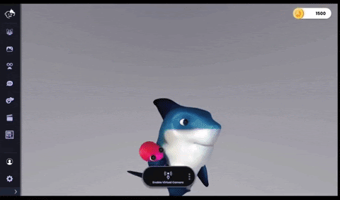
2. Open the Props drawer.
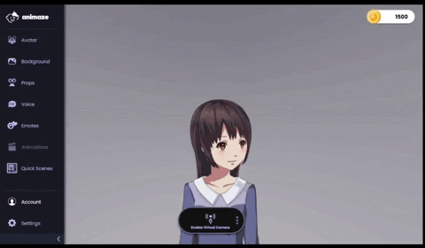
3. Select the prop you would like to add. You can do so by clicking a prop in the drawer. Or, you can import your own PNG file or .model3.json files. The props appear in alphabetical order; you may need to scroll to find your imported prop.
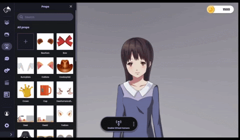
4. Once a prop is selected, the props customization draw automatically opens. The customization drawer offers the following controls:
-
Size: proportionally increase or decrease prop’s size.
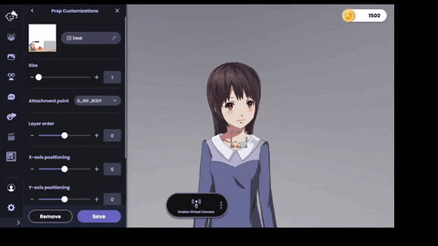
-
Attachment point: choose the mesh to attach the prop. If you are unfamiliar with the mesh names, you can use the mouse to drag and attach your prop.
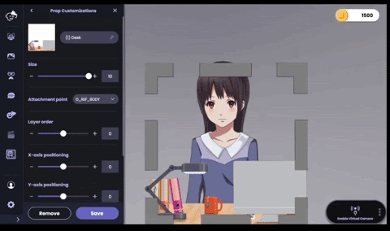
-
Layer order: positive numbers place the prop on top of your avatar. Negative numbers place the prop behind your avatar. This feature becomes especially powerful when you are creating scenes with multiple props.
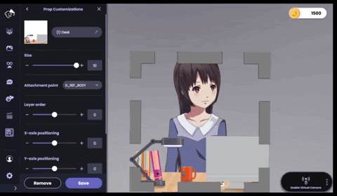
-
X-axis and y-axis positioning: in addition to using your mouse, you can move props right and left and up and down with these sliders.
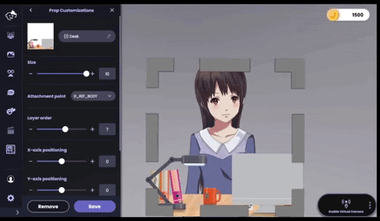
-
Rotation: rotate the prop up to 180 degrees to the right or left
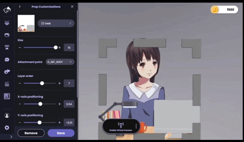
-
Flip Image: Flip or invert the prop
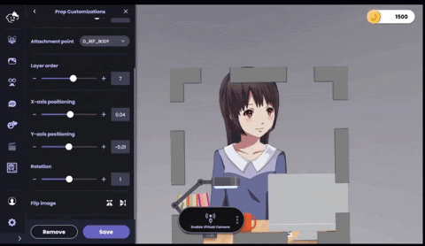
5. Keep things organized by changing the prop’s name in the text field next to the prop icon!
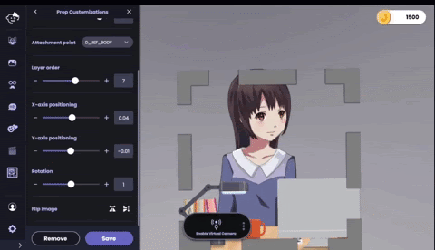
6. Once satisfied with your prop’s size and position, click Save to exit the Prop Customizations drawer and save the prop and avatar.
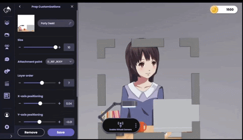